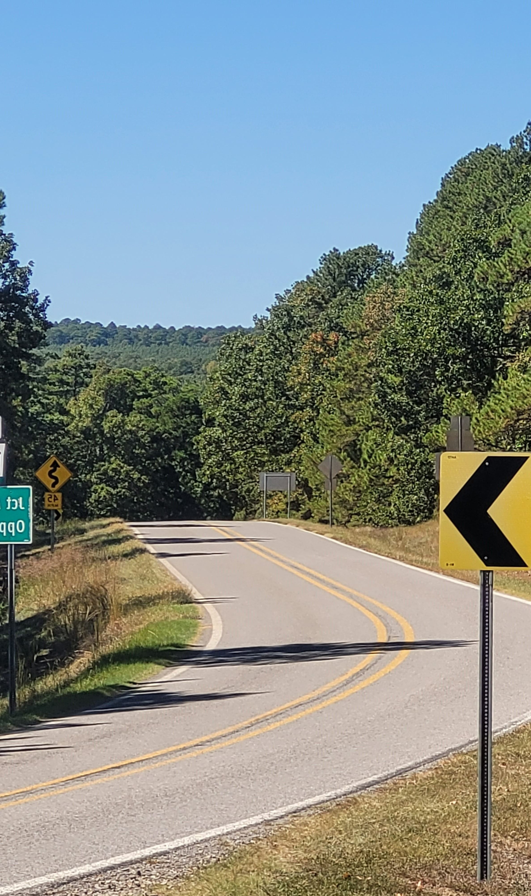
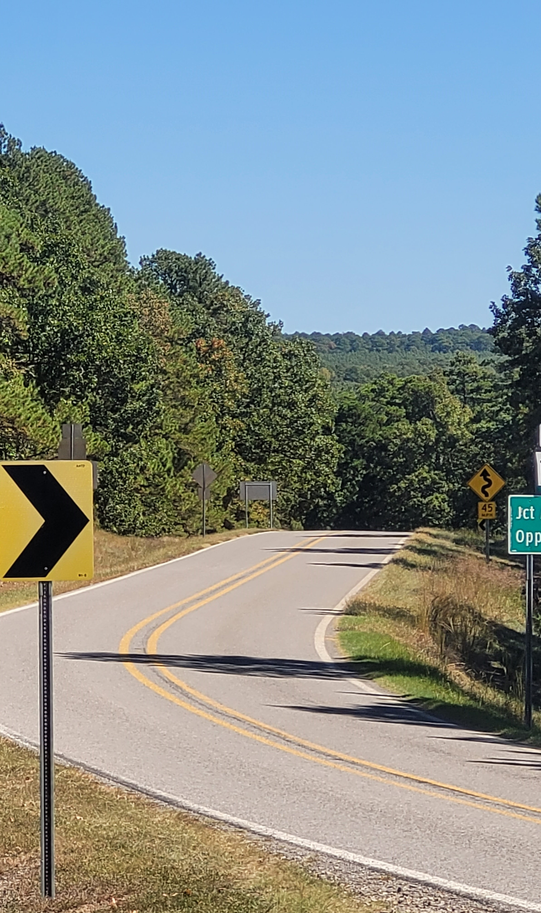

Why Ride Arkansas?
Arkansas, The Natural State, contains many types of terrain. From the rugged Ozarks to plains, forests and river bottoms, there are thousands of miles of road to suit any taste or skill level. Hitting the road on a motorcycle(or car, we won't judge), can be a great way to unwind, go site seeing, find a new favorite hideaway or restaurant, or even build a weekend getaway. What can Arkansas show you next?
With so much road to travel, how can I choose?
With 16,442.90 miles (26,462.28 km) of Interstates, U.S. Routes,
state highways, and special routes, it can be difficult to pick
your route. That’s where we come in, simply choose below your skill
level, beginner, intermediate, or expert, and how long you want to
ride, a short jaunt(90 minutes or less), a full ride(less than 3
hours), or a full day trip.
Once selected we’ll provide 1
or more routes that fit your needs. Click on the links provided to
be taken to a detail page with maps, pictures and a description of
the route and even interesting stops along the way!

Please Select Your Skill and Ride Length
| Title | Skill Level | Length | Link | Brief Desc. |
|---|---|---|---|---|
| {{ride.name}} | {{ride.skill}} | {{ride.length}} | {{ride.name}} | {{ride.tease}} |